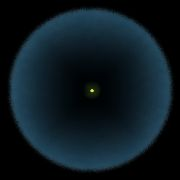

Původ
Vznik komet, Oortův oblak, Kuipierův pás
Vznik komet
Ve sluneční soustavě se komety snad nejvíce blíží prvotní látce, ze které sluneční soustava vznikala. Výzkum komet je tedy klíčový pro zjištění pravdy o historii a vzniku sluneční soustavy.
Ve vzorcích z komety Wild 2 nachytaných soundou Stardust byla nalezena částice olivínu, pro jejíž vznik je byla zapotřebí teplota asi 1100 °C. Takže vznik komet bude možná o něco složitější, než se dle dosavadních teorií soudí. Možná jsou ale teorie správné a olivín se na kometu Wild 2 dostal nějak dodatečně.
Odkazy
- http://www.komety.cz/article.php3?sid=154
Jak na formování komet? – Miloš Tichý 23. 3. 2006
Oortův oblak

Schéma Oortova oblaku
Teorii o velké kulové slupce obalující Sluneční soustavu tvořenou kometárními jádry poprvé srozumitelně rozvinul význačný holandský astronom Jan Oort a van Woerkom. Tato skrytá zásobárna komet se na Oortovu počest nazývá Oortův oblak.
Něco takového tušili i astronomové předtím, např. Laplace. Věděli, že komety ze Sluneční soustavy pomalu mizí a to znamenalo, že buď musejí skrytě vznikat nebo musejí být odněkud neustále doplňovány. Ale odkud? Na to přišel až Oort.
Komety v Oortově mračně
Svět kometárních jader se rozkládá od Slunce na třetinu cesty k nejbližší hvězdě. V Oortově mračnu je skryto ještě asi bilion kometárních jader, které díky gravitačnímu působení okolních hvězd pomalu prosakují až do vnitřních oblastí Sluneční soustavy. Kometární jádra jsou v Oortově mračnu ale daleko od sebe, protože jejich množství je příliš malé na tak velký prostor. Z Oortova mračna pocházejí dlouhoperiodické komety.
Tvar Oortova oblaku
To, že je Oortův oblak kulatý, se zjistilo velice jednoduše. Dráhy komet jsou totiž zcela náhodně skloněny k rovině oběhu planet.
Oortovo mračno bylo pravděpodobně původně ploché. Kulového tvaru nabylo až díky gravitačním poruchám způsobenými blízkými průchody hvězd.
Kuipierův pás
Další, sice daleko menší, ale zato bližší zásobárna komet je Kuipierův pás. Zde se nacházejí komety, ale i planetky a dokonce i tělesa smíšená (kentauři). Kuipierův pás se nalézá za Neptunem a pochází odtud nové krátkoperiodické komety. Krátkoperiodické komety nemají tak velký sklon k ekliptice jako komety dlouhoperiodické (jejihž sklon je vpodstatě libovolný).